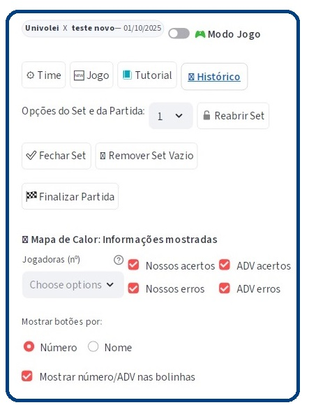
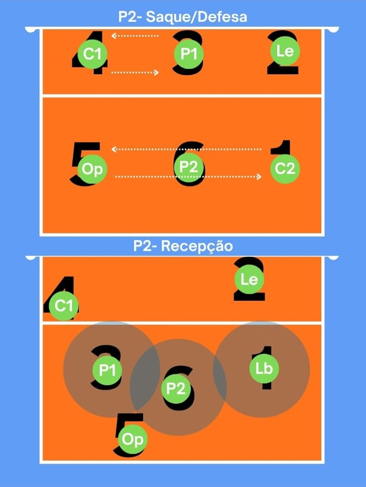
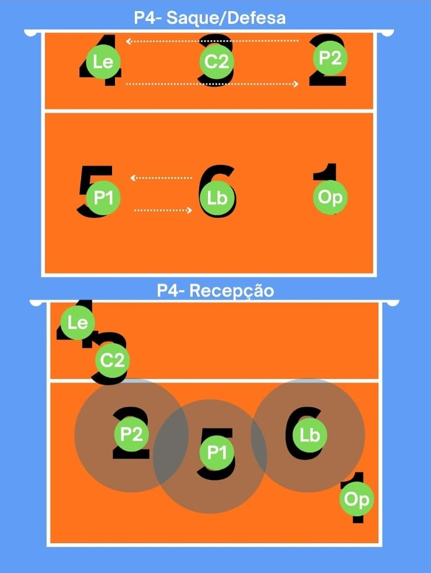

Acesse pelo endereço
https://univolei-scout.streamlit.app/.
Caso haja
jogo em aberto, o título e a data aparecem no cabeçalho.
Na primeira linha você encontra os botões:
- Time → cadastrar jogadoras.
- Jogo → iniciar/continuar partida.
- Tutorial → abre este guia.
- Histórico → análise de jogos anteriores.
O Modo Jogo é o principal local de marcação de pontos.
Aqui você registra acertos e erros, visualiza mapa de calor, placar por set e controla jogadoras.
O Histórico é o dashboard principal de análise.
Mostra evolução do placar, comparativo por fundamento, erros cometidos e mapas de calor.
É aqui que você identifica pontos fortes e fraquezas para direcionar treinos e melhorar o desempenho.
P1 (Levantadora): posição 1, arma jogadas rápidas, cobre defesa direita.

P2 (Oposta): ataque pela direita, ajuda na cobertura e bolas de fundo.
P3 (Central): ataque rápido pelo meio, responsável pelo bloqueio central.

P4 (Ponteira): atacante pela esquerda, forte no passe e apoio de cobertura.
P5 (Defensora/Ponteira): fundo esquerdo, prioridade em recepção e coberturas.
P6 (Líbero ou Ponteira de fundo): fundo central, defesa principal e recepção de saque.